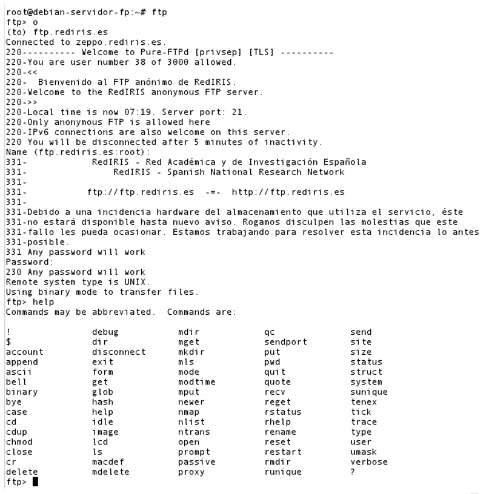

Servicio de Transferencia de Archivos en Modo Texto
Clientes FTP en terminal
1.7. Servicio de transferencia de archivos en modo texto
Como se comentó anteriormente, existen varios tipos de clientes ftp, entre los cuales los clientes en modo texto desde siempre estuvieron incorporados en las distribuciones GNU/Linux.
De entre los clientes tipo texto cabe destacar dos: el cliente en modo texto ftp y el cliente en modo texto lftp. En GNU/Linux Debian se dispone del cliente modo ftp en una instalación básica. Para poder utilizarlo en el sistema simplemente hay que ejecutarlo como comando: el comando ftp.
Vamos a ver, a continuación, el comportamiento del cliente en modo texto ftp en la conexión al servidor ftp ftp.rediris.es:
- Básicamente la sintaxis es la siguiente:
ftp [-pinegvd] [host [port]]
donde
- host identifica el servidor ftp
- port identifica el puerto, por defecto 21, por lo cual si conectas a un servidor ftp configurado en ese puerto no es necesario escribirlo, ya se considera.
Puedes ver la ayuda del comando ftp mediante: man ftp ó info ftp .
- Al ejecutar el comando se abrirá una consola propia de ftp en la cual puedes introducir comandos ftp para: abrir conexión, moverse por rutas, descargar archivos …
Es muy típico ejecutarlo con el parámetro host, esto es, con el servidor ftp al cual quieres conectar:
# ftp ftp.rediris.es
También puedes ejecutar el comando sin parámetros, de esta forma abrirás directamente la consola ftp y deberás actuar con ella a través de los comandos de la misma:
# ftp
ftp> o
(to) ftp.rediris.es
- A continuación se pedirá usuario y contraseña para establecer la conexión. En el caso del servidor de rediris puedes conectar mediante un usuario cualquiera y una contraseña cualquiera. Es muy típico en servidores ftp que exista un usuario anónimo, cuya contraseña sea cualquier dirección de correo -real o ficticia-, por ejemplo: a@ .
- Ahora en la consola ftp puedes ejecutar comandos, ¿cuales? Pues los que estén habilitados, y ¿cuales están habilitados? Lo puedes saber ejecutando el comando help.
En la siguiente imagen puedes ver el ejemplo de conexión ftp mediante el cliente en modo texto ftp al servidor ftp.rediris.es:
